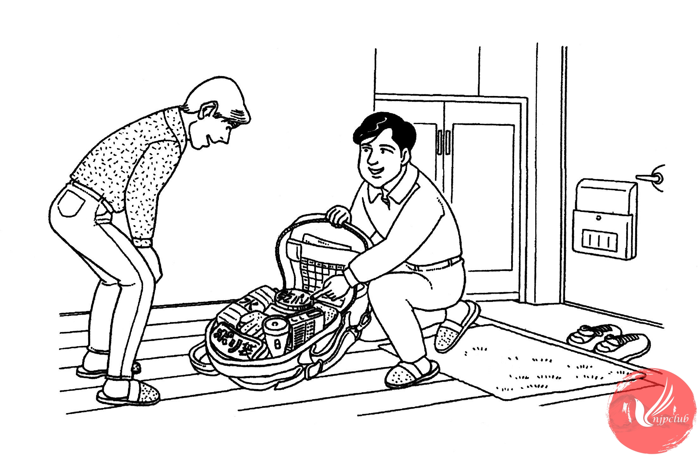

チケットを 予約して おきます

| ミラー： |
こんにちは。 |
| 鈴木： |
いらっしゃい。さあ、どうそ。 |
| ミラー： |
大きい リュックが 置いて ありますね。 山へ 行くんですか。 |
| 鈴木： |
いいえ。非常袋ですよ。 |
| ミラー： |
非常袋？何ですか。 |
| 鈴木： |
非常時に 使う 物を 入れて おく 袋です。 電気や ガスが 止まっても、３日ぐらい 生活できる 物が 入れて あるんです。 |
| ミラー： |
水や 食べ物ですか。 |
| 鈴木： |
ええ、ほかにも いろいろ ありますよ。懐中電灯とか、ラジオとか…。 |
| ミラー： |
わたしも 準備して おかないと。 |
| 鈴木： |
非常袋は スーパーでも 売って いますよ。 |
| ミラー： |
そうですか。じゃ、買って おきます。 |